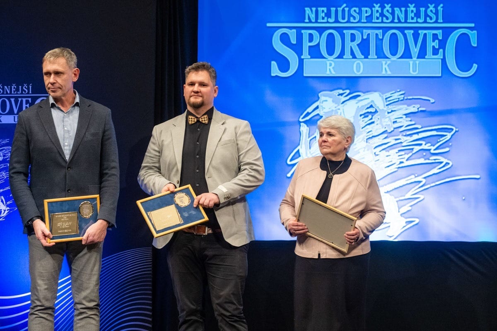
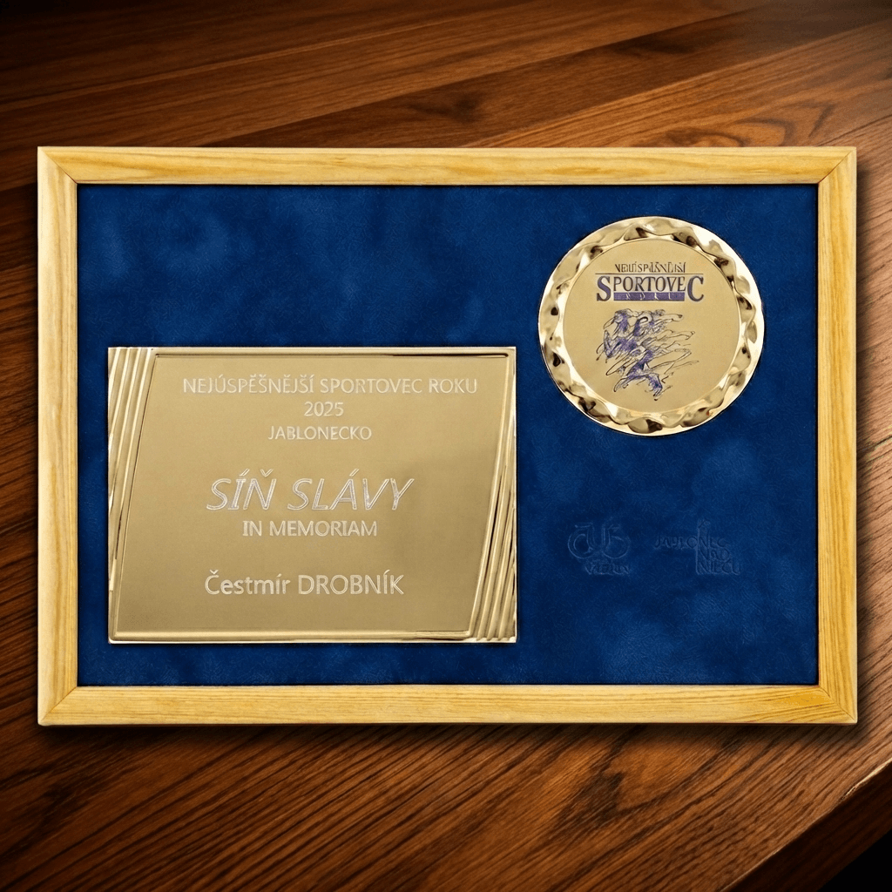

V pondělí 2. února proběhlo v Městském divadle v Jablonci nad Nisou slavnostní vyhlášení ankety Nejúspěšnější sportovec Jablonecka. Součástí večera bylo také uvedení významných osobností do Síně slávy jabloneckého sportu.
Jedním z oceněných byl Čestmír Drobník, který byl do síně slávy uveden in memoriam. Dlouholetý trenér, funkcionář a neúnavný propagátor šachu patřil k lidem, kteří po desítky let formovali sportovní život v Jablonci nad Nisou. Svou prací, nasazením a lidským přístupem ovlivnil generace hráčů a zanechal za sebou stopu, která jen tak nezmizí.
Uvedení Čestmíra Drobníka do Síně slávy je důstojným poděkováním za vše, co pro jablonecký sport udělal.

Cenu přebírá předseda oddílu Antonín Duda

Pamětní plaketa In Memoriam
Zdroj: Liberecký kraj (a Facebook)